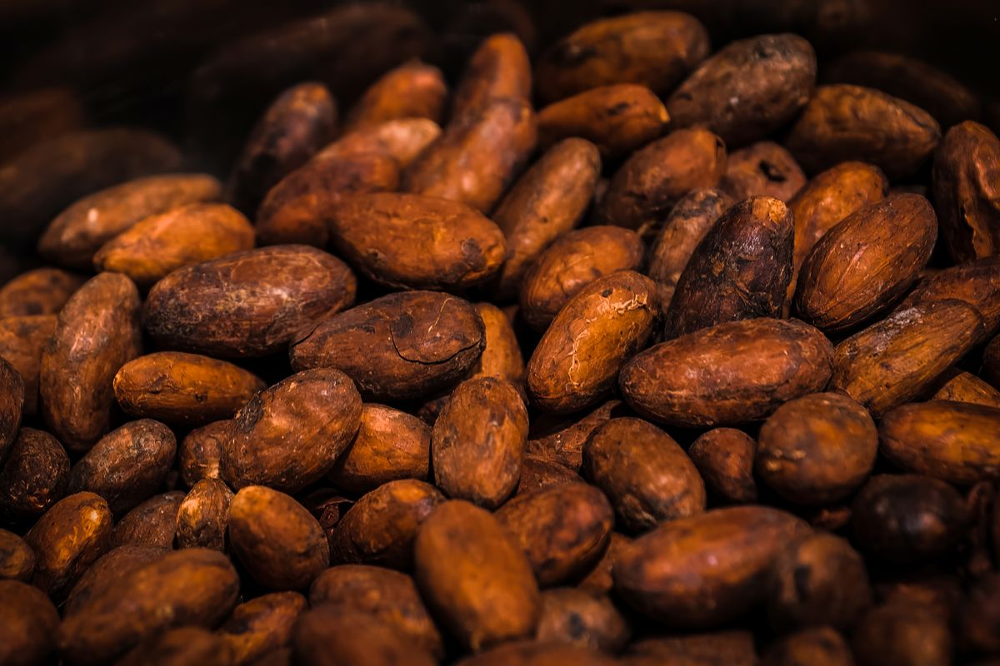
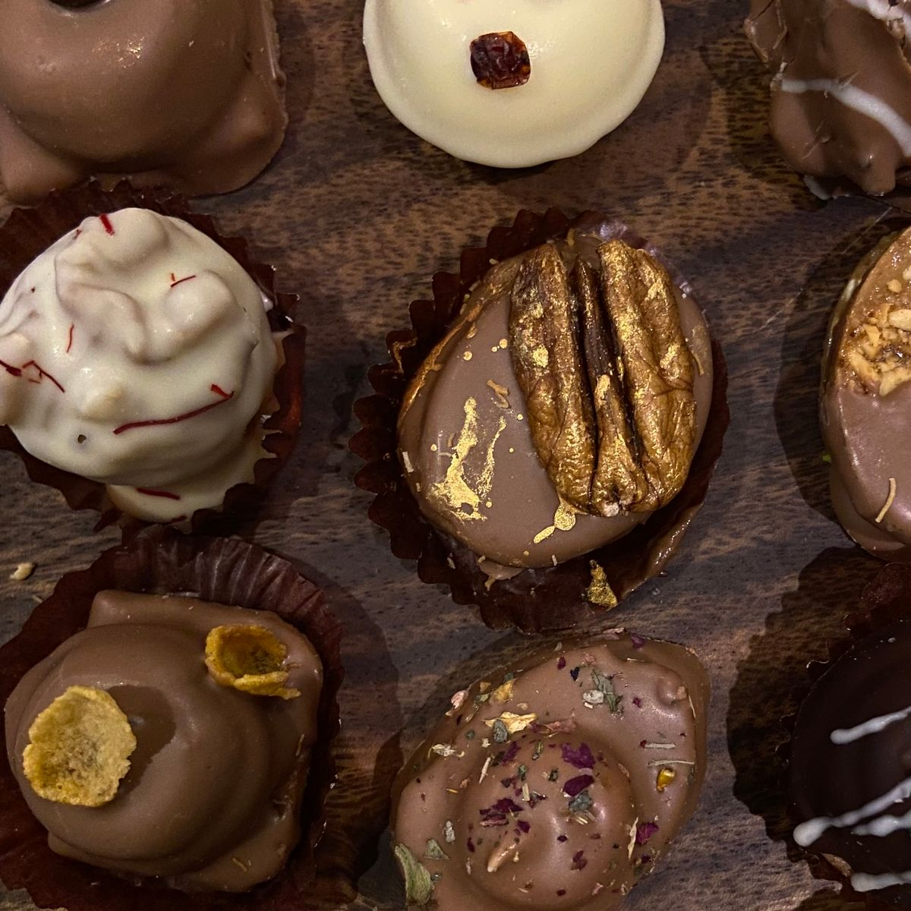
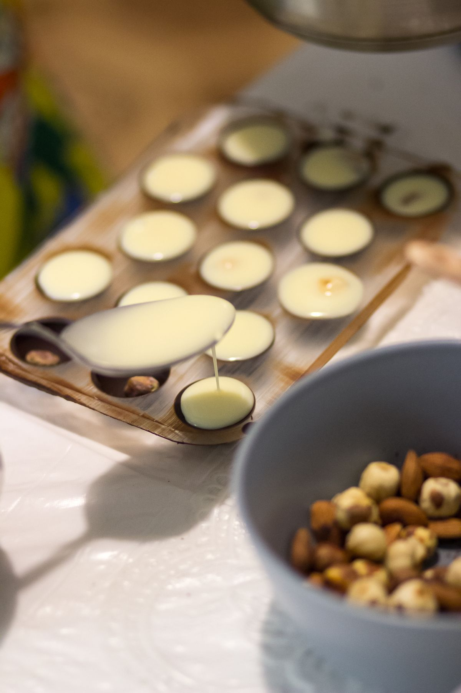

About · The chocolatier
Twenty years of pastry, ten of them arguing with cocoa butter.
I trained as a pastry cook in Lyon and spent my twenties in other people's kitchens, where chocolate was a garnish. In 2014 I went to work for a bean-to-bar maker and learned the longer truth: chocolate is an ingredient with a birthplace. Velvet Cocoa opened in 2016 — one counter, one melangeur, a marble slab I still temper on — and it has stayed deliberately small. Everything below is the working knowledge the shop runs on, printed because a customer who understands the snap buys better chocolate, here or anywhere.
Tempering, and what the snap is telling you
Cocoa butter sets into several crystal forms and only one of them — the fifth — gives a bar its gloss, its contraction out of the mould, and that clean snap. Tempering is simply persuading the butter into Form V: melt out every crystal, cool to grow the right seeds, then warm back to working temperature and hold it there while you mould, dip and enrobe.
| Dark | Melt 45–50 °C · cool 27 °C · work at 31–32 °C |
| Milk | Melt 40–45 °C · cool 26 °C · work at 29–30 °C |
| White | Melt 40 °C · cool 25–26 °C · work at 28–29 °C |
Break a bar at room temperature. A sharp click and a clean, even break mean the temper held. A soft bend or a crumbly snap means the crystals wandered — the flavour survives, mostly, but the texture is the receipt for the work, and I would rather you could read it.
Origin is a flavour, not a mystique
Two bars can both read 70% and taste like different desserts, because the percentage counts beans plus added cocoa butter and sugar — it says nothing about which beans. Kilombero fruit, Manabí flowers, Sambirano citrus: those are the valley, the ferment and the roast talking. That is why the shelf leads with origin and notes, and why “100%” impresses me so little — it is the one label that tells you the recipe and hides the taste entirely.
I buy from three importers who name the valley and the harvest year, roast light enough to keep the differences, and grind in a 6 kg melangeur for two days. Small batches are not a marketing line here; they are what lets one valley stay itself instead of being averaged away.


Ganache lives three weeks. I print that on the box.
A ganache is cream and chocolate holding hands, and cream has its own calendar. Without preservatives, a fresh-cream bonbon is at its best for about three weeks kept cool — after that the centre dries, the flavours flatten, and it becomes a photograph of itself. Big makers solve this with sorbates and alcohol; I solve it by making small amounts twice a week and dating every box twice: the day it was enrobed, and the day to finish it by.
It is also why the order planner refuses some dates. A wedding six weeks away does not get bonbons made today — it gets bonbons made in its own week, and the planner will tell you so rather than take the money quietly.
Keeping chocolate: never the fridge
Chocolate wants a cool, dry cupboard — 16 to 18 °C, away from the onions and the radiator. The fridge is the one place it should never go: cold draws moisture, moisture dissolves sugar at the surface, and you get sugar bloom — a grey, gritty coat that looks alarming and tastes of very little. Fat bloom is the other ghost: a whitish film when a bar has warmed and cooled in a sunny shop window. Both are cosmetic. Neither is mould. A bloomed bar has lost its snap and some of its shine, not its soul — eat it, ideally melted into something, and do not bin good beans for a weather report.
And a word for white chocolate, since it gets slandered at my own tastings: it is cocoa butter, sugar and milk — the bean's own fat, pressed from the same nibs as the darkest bar here. Bad white chocolate is waxy candy. Good white chocolate tastes of cream and the ghost of the bean, and it carries flavours — vanilla, pear, brown butter — that dark chocolate would shout over. I serve it blind on Fridays and let it defend itself.

Come and taste before you believe any of this
Friday tastings seat ten, at 19:00, €38. Or simply come to the counter — the open bar is cut every morning and nobody is charged for an opinion.